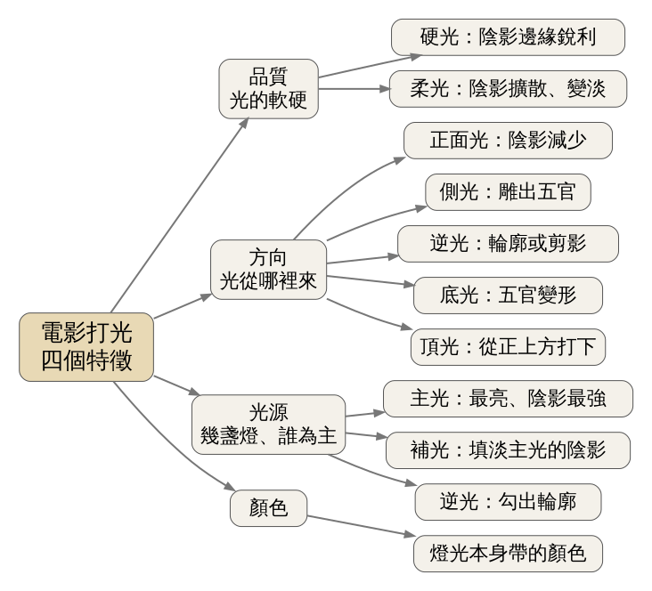
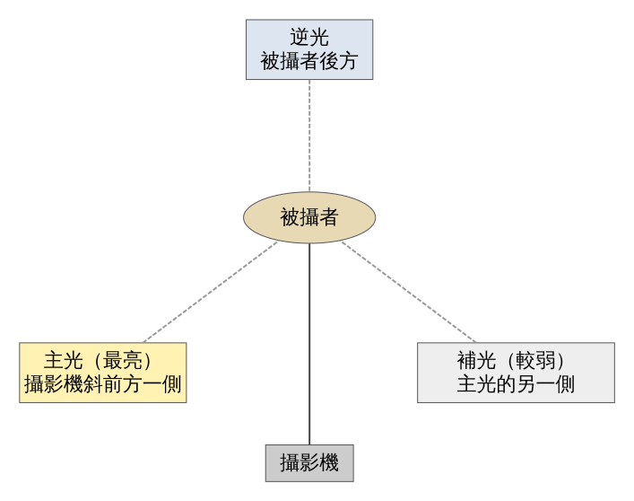
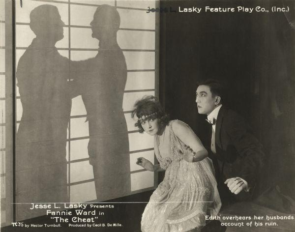
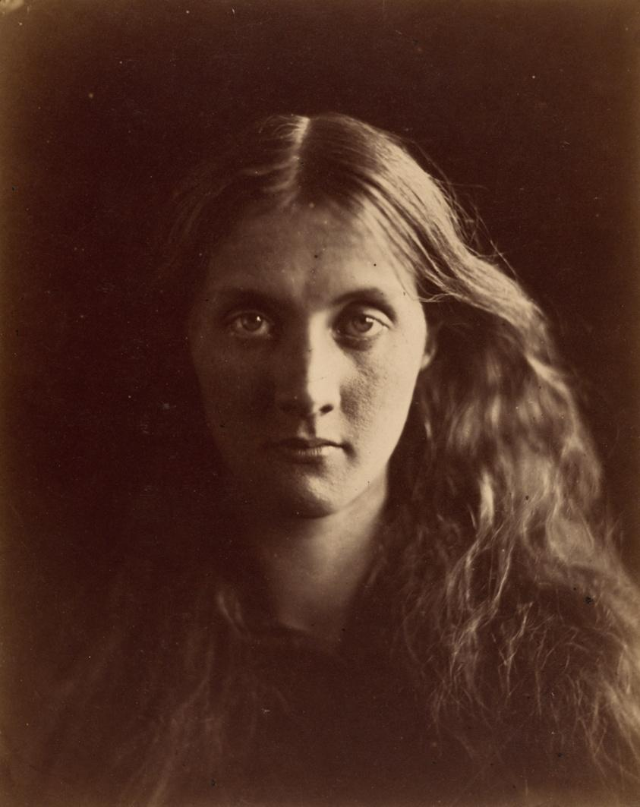

Bordwell 與 Thompson 的電影教科書《Film Art》把銀幕上的光拆成四個可以分開觀察的特徵：品質、方向、光源、顏色。今天拿 1915 年《The Cheat》的一場戲來練習，把光一盞一盞拆開來看，看每盞燈各替故事做了哪件事。
軼事（DeMille 自述，版本不一；依二手文獻：Higashi 1994、The Film Foundation）
1914 到 1915 年間，Cecil B. DeMille 在洛杉磯替 Jesse L. Lasky 的公司拍長片。有些畫面裡，演員的臉只亮了一半，另一半沉在黑暗裡。DeMille 晚年反覆講過一個故事：合夥人 Samuel Goldfish（後來改名 Goldwyn）看了很不安，擔心戲院老闆只看到半張臉，就只肯付一半的租片錢。DeMille 的回答大意是：跟他們說，這叫「Rembrandt lighting」。
這個故事有好幾個版本。Sumiko Higashi 在《Cecil B. DeMille and American Culture》（1994）裡引的是 DeMille 那句不耐煩的回覆，並推測說的大概是《The Man from Home》或《The Warrens of Virginia》（1915）的鏡頭。The Film Foundation 的介紹說 Goldfish 是發電報來問的。Wikipedia 引 DeMille 1959 年自傳的版本，則多了一個結尾：Goldwyn 聽完放心了，說這種光戲院要付雙倍。本課沒有查到自傳原文，只能確定這是 DeMille 自己講、後人轉述的軼事。
史料（依 Higashi 1994）
光是誰打的，也沒有故事說的那麼單純。Higashi 指出，這類低調光效最早出現在《The Virginian》（1914）的營火夜戲，很可能出自 Wilfred Buckland 之手。他原本是百老匯製作人 David Belasco 的舞台設計，1914 年 5 月到洛杉磯時，《Moving Picture World》稱他是「舞台燈光的電氣專家」。DeMille 自己晚年則回憶，他得一再叮囑攝影師 Alvin Wyckoff：桌子底下不要亮，房間的後角要暗。片廠的人因此說他喜歡「contrasty」，意思是對比強烈的畫面。公司把這種光當成賣點，宣傳時叫它「Lasky lighting」或「Rembrandt lighting」。
經典理論（依二手文獻：CSUN 課程大綱整理 Film Art 2001、2010 年版；UC Irvine 詞彙表引第 7 版定義）
《Film Art: An Introduction》由 David Bordwell 與 Kristin Thompson 合著，1979 年初版，2023 年出到第 13 版，這一版加入 Jeff Smith 為共同作者。燈光放在討論「場面調度」（mise-en-scène）的章節，和佈景、服裝化妝、表演並列。本課無法開啟教科書本身，以下依兩份明確註明出自《Film Art》的教學材料整理。
書中的出發點很樸素：光靠製造亮部和陰影來塑造物體，也讓觀眾感覺到場景的空間。陰影分兩種。物體沒被照到的那一面叫「附著陰影」（attached shadow），像臉頰背光的那一側；物體擋住光、投到別處的影子叫「投射陰影」（cast shadow），像人影落在牆上。
接著是四個特徵（見圖 1）：

圖 1｜《Film Art》談電影燈光的四個特徵。來源：本課程依 Bordwell & Thompson, Film Art: An Introduction（依 CSUN 課程大綱與 UC Irvine 詞彙表整理）繪製。授權：本課程自製，來源頁面
古典好萊塢把這些變成一套習慣做法：每個鏡頭至少三盞燈，主光、補光，再加上一盞從攝影機對面打過來的逆光，在人物身上勾出一圈細細的亮邊，這就是「三點打光」（見圖 2）。大綱特別提到，好萊塢電影通常每換一個攝影機位置，就重新排一次燈。

圖 2｜三點打光的平面示意（俯視），位置與距離為示意，非實際片場配置。來源：本課程依 Bordwell & Thompson, Film Art: An Introduction（依 UC Irvine 詞彙表與 CSUN 課程大綱）繪製。授權：本課程自製，來源頁面
三盞燈的比例調整，得到兩種整體風格。高調照明用補光和逆光把明暗差距壓小，光多半是柔的，陰影透明；低調照明的對比強，陰影又深又銳利，補光減弱甚至拿掉，效果就是繪畫裡說的明暗對照（chiaroscuro）。
作品：《The Cheat》，導演 Cecil B. DeMille，攝影 Alvin Wyckoff，主演 Fannie Ward、Sessue Hayakawa，Jesse L. Lasky Feature Play Company 出品，1915 年。本片 1993 年入選美國國家影片登錄，現為公有領域，可在 Internet Archive 等處觀看。
劇情與場景（史料，依 Higashi 1994 對影片的描述）
社交名媛 Edith 把經手的慈善基金賠光了。富有的古董收藏家 Tori 願意借她一萬元，條件是她要「付出代價」。關鍵的幾場戲都在 Tori 家的「障子房」裡，房間用日式紙拉門隔開。Higashi 記下了這幾個光的變化：Edith 走進房間時是非常低調的照明；障子房的鏡頭染成琥珀色，和前面染成藍色的舞會場面對比；Edith 昏倒後，Tori 把燈一盞盞關掉，室內全黑，染色也從琥珀換成藍。接著，房裡忽然亮起一盞燈，把 Edith 的丈夫 Richard 和朋友交談的影子投在左側的紙拉門上。Edith 在門的這一側聽見丈夫說他也拿不出錢。

圖 3｜《The Cheat》宣傳卡，圖說為「Edith 偷聽丈夫談起自己破產」。紙拉門上是兩名男子的投影，右邊是 Fannie Ward 與 Sessue Hayakawa。宣傳劇照未必與影片畫格完全相同。來源：Wisconsin Center for Film and Theater Research，The Cheat lobby card，1915。授權：Public domain（美國，1931 年前出版），來源頁面
用四個特徵拆這張劇照（本課觀察）
先找光源（見圖 3）。紙拉門後面有一盞燈，它對門後兩個男人來說，是從背後照過來的光；對門前的 Edith 和 Tori 來說，整片發亮的紙門就是一塊巨大的光源。
再看品質。門上兩個人影的邊緣相當清楚，連鼻樑、下巴的輪廓都讀得出來，這要靠一個集中的硬光源，人和紙門之間的距離也不能太遠。門前兩個人的臉就柔和得多，因為照亮他們的是一大片透光的紙，面積大，陰影就散。
方向。Edith 和 Tori 的光都從畫面左側來，屬於側光。Tori 的臉朝向紙門，亮的是朝向紙門的那半邊臉；他背後、畫面右下角幾乎全黑。沒有看到明顯的補光去填那片黑，這是低調照明。
顏色。黑白底片拍不出燈光的顏色，1915 年的觀眾看到的色彩來自後製染色。這場戲染成琥珀色，Tori 關燈後轉成藍色，顏色跟著劇情裡的「燈」一起變。
把四項放回故事裡，這一盞燈做了三件事。它把隔壁房間的資訊（丈夫破產）用投射陰影送進 Edith 這一側的畫面，一個鏡頭裡同時有兩個空間。它讓人物只剩輪廓，觀眾看見的是處境，看不見表情。它也讓 Edith 在偷聽的這一刻，臉被同一片光照亮，正好在這時候她決定答應交易。The Film Foundation 的介紹也說，這部片用剪影與陰影推動敘事。
光同時在替角色貼標籤。學者 Daisuke Miyao 在舊金山默片影展的節目文章裡寫道，片頭那個 Hayakawa 的鏡頭，人物被黑暗包圍，只有一側有光源，效果陰森，強化了這個角色的反派感。Higashi 也記錄，1918 年重新發行時，因為日本是一戰盟國，片商把角色改成「緬甸象牙大王 Haka Arakau」，Higashi 寫書時流通的就是這個版本；The Film Foundation 參與的修復版，則依原始分鏡把影片還原成 1915 年的樣子。
史料（依芝加哥藝術博物館館藏說明、V&A 文章）
比《The Cheat》早將近五十年，Julia Margaret Cameron 已經在照片裡讓半張臉沉進黑暗。她 48 歲才收到第一台相機，是女兒和女婿送的禮物。依 V&A 引她 1874 年寫的自傳手稿〈Annals of My Glass House〉，她把煤棚改成暗房，又把送給孩子的一間玻璃雞舍改成「玻璃屋」攝影棚。
1867 年 4 月，她拍了即將出嫁的外甥女 Julia Jackson（見圖 4）。芝加哥藝術博物館的館藏說明拿它和當時的商業肖像比：典型的商業肖像拍一個小小的站立全身人像，對焦清楚、光線均勻；Cameron 只拍頭部，臉上清楚的面不多，另一半留在陰影裡。

圖 4｜Julia Margaret Cameron，《Julia Jackson》，1867，蛋白相紙，芝加哥藝術博物館 1968.227。來源：Julia Margaret Cameron，Julia Jackson，1867。授權：CC0（公有領域），來源頁面
本課觀察：用《Film Art》的詞彙描述，光從畫面左上方來，臉的另一側是大片附著陰影，背景全暗，看不出有補光，是一張低調照明的肖像。和電影對照，差別在時間。Cameron 只要把光安排好一次，曝光那幾秒裡人別亂動就行（V&A 提到 Tennyson 就因為曝光時動了一下，影像出現重影）。電影的燈要跟著演員走位、跟著鏡頭換位置重新排，還得讓前後鏡頭接得起來。《The Cheat》甚至讓燈本身在戲裡亮、在戲裡滅，光的變化本身就是情節。
誤解一：「Rembrandt lighting」是 DeMille 發明的。傳說。這個名稱的流傳主要來自 DeMille 自己的軼事，而且版本不一。Higashi 認為這種低調光效很可能來自 Belasco 劇場出身的 Buckland，舞台早就在用。今天攝影教學裡的「林布蘭光」又是另一回事：指在較暗那側臉頰、眼睛下方留一個小三角形亮區的人像打法（依 Wikipedia 條目），和 1915 年拿來當宣傳詞的用法不同。
誤解二：高調就是明亮歡樂，低調就是夜晚或陰鬱。依《Film Art》的定義，高調、低調講的是亮部和暗部之間的對比，不是整體亮度。CSUN 的大綱也提到，高調照明可以用來表現不同的光線條件與時段。
誤解三：三點打光是「正確」或「寫實」的打法。它是古典好萊塢發展出來的習慣，主光通常對應場景裡的一個光源，讓光看起來有來由；但每個機位重新排燈，本身就是為鏡頭服務的安排。光也從來不中立：《The Cheat》裡同樣的側光，被拿來把一個亞裔角色拍得更陰森。
看（5 分鐘）
今晚在家裡找一個人（或鏡子裡的自己）、一個馬克杯。分別在天花板燈下、檯燈旁看一次，找出：主光在哪裡？臉或杯子上的附著陰影在哪一側？桌面上有沒有投射陰影？它的邊緣是清楚的還是糊的？
做（10 分鐘）
關掉房間大燈，只用一盞檯燈或另一支手機的手電筒，對著馬克杯（或自己的臉）用手機各拍一張：
回顧（5 分鐘）
來源 | 來源類型 | 查核日期 |
María Elena de las Carreras, Mise-en-scène: Essential Concepts（CSUN 課程大綱，註明依 Bordwell & Thompson, Film Art 2001、2010 年版） http://www.csun.edu/~med61203/Film%20Art%20Mise-en-scene.pdf | 經典理論（依二手文獻） | 2026-11-25 |
Glossary of Film Terms（UC Irvine，定義引自 Bordwell & Thompson, Film Art, 7th ed., McGraw-Hill, 2004） https://core.humanities.uci.edu/archive/Student/WritersHandbook/Bordwell-Thompson-film-terms.pdf | 經典理論（依二手文獻） | 2026-11-25 |
Bordwell, Thompson & Smith, Film Art: An Introduction, 13th ed., McGraw Hill, 2023（出版資訊；初版 1979） https://www.mheducation.com.au/film-art-an-introduction-ise-9781265205478-aus-group | 經典理論（書目資訊） | 2026-11-25 |
Sumiko Higashi, Cecil B. DeMille and American Culture: The Silent Era, University of California Press, 1994 | 史料（學術專書） | 2026-11-25 |
The Film Foundation, Out of the Vaults: Cecil B. DeMille's The Cheat, 1915 | 史料（典藏機構介紹） | 2026-11-25 |
Daisuke Miyao, The Cheat（San Francisco Silent Film Festival 節目文章） | 史料（學者評介） | 2026-11-25 |
Rembrandt lighting（Wikipedia 條目，引 DeMille, The Autobiography of Cecil B. DeMille, Prentice-Hall, 1959, p. 115；自傳原文未查核） | 軼事（依二手文獻） | 2026-11-25 |
Victoria and Albert Museum, Julia Margaret Cameron's working methods https://www.vam.ac.uk/articles/julia-margaret-camerons-working-methods | 史料 | 2026-11-25 |
Victoria and Albert Museum, Annals of My Glass House by Julia Margaret Cameron（手稿 1874 年寫成） https://www.vam.ac.uk/articles/annals-of-my-glass-house-by-julia-margaret-cameron | 史料 | 2026-11-25 |
圖 3 授權頁：The Cheat 1915.jpg（Public domain，美國） | 圖片授權 | 2026-11-25 |
圖 4 授權與館藏說明：Art Institute of Chicago, Julia Jackson, 1867, 1968.227（CC0） https://api.artic.edu/api/v1/artworks/29230；https://www.artic.edu/artworks/29230/julia-jackson | 圖片授權／史料 | 2026-11-25 |